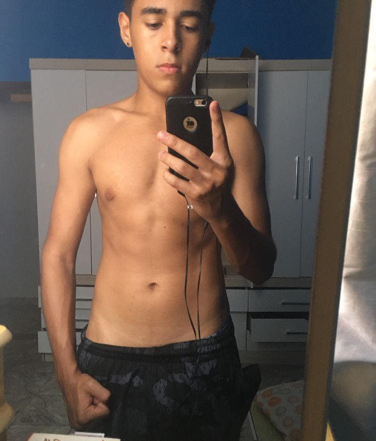
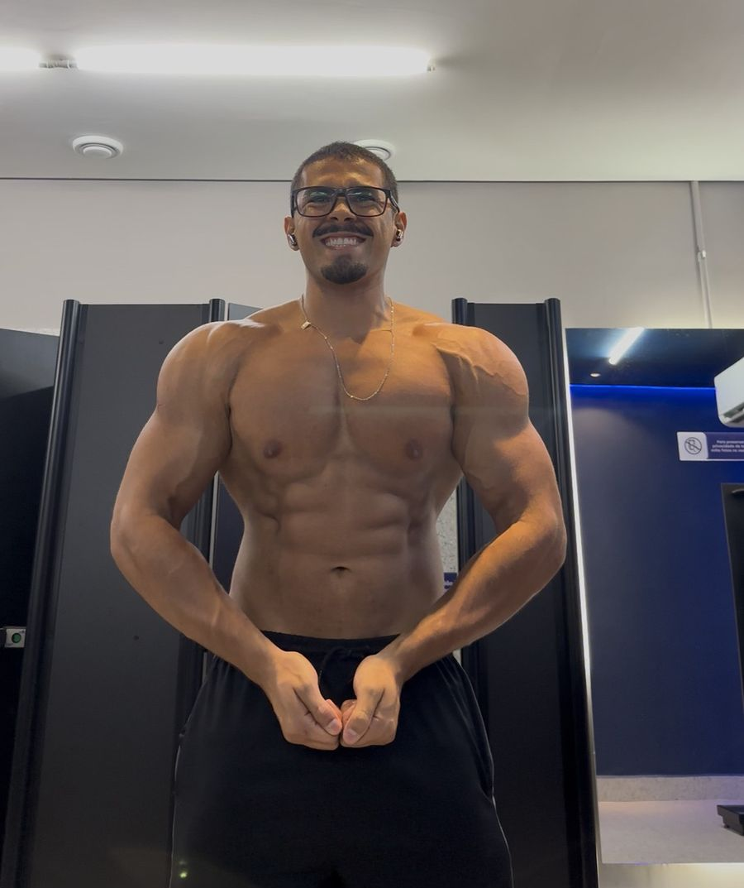

Pare de
recomeçar
toda segunda.
Acompanhamento nutricional de 3 meses com o Kevin: plano feito para a sua rotina, ajustes quando a vida muda e WhatsApp direto com ele, não com robô.
Novo Quer começar menor? Desafio Atlas Start: 21 dias por R$ 97
- 3 meses
- de acompanhamento individual
- 1:1
- WhatsApp direto com o nutricionista
- Online
- Brasil e exterior · presencial em Rio Preto


Se uma dessas frases é sua,
a gente precisa conversar.
Quase todo mundo que chega aqui já tentou sozinho. Não faltou vontade. Faltou um plano que aguentasse a vida real.
- 01
“Começo bem, mas na terceira semana eu largo.”
O problema não é você. É um plano que não previu a semana corrida. Aqui ele é ajustado em vez de abandonado.
- 02
“Já sei o que é saudável. Só não consigo manter.”
Informação você já tem. O que falta é um plano que caiba nos seus horários e alguém para cobrar e ajustar.
- 03
“Treino pesado e o corpo não muda.”
Treino sem estratégia alimentar gera esforço sem resultado. O plano é calculado para o seu objetivo e para o seu treino.
- 04
“Toda dieta me faz cortar o que eu gosto.”
Estratégia antes de restrição. Você aprende a encaixar o que gosta sem sair do plano.
Três meses.
Um plano que muda com você.
Dieta pronta funciona até a primeira semana difícil. No Plano Trimestral você tem um plano feito para a sua rotina e alguém revisando o caminho com você, do primeiro ao último dia.
- Avaliação completaRotina, histórico, treino, exames, preferências e o que já deu errado antes.
- Plano alimentar individualCalculado para o seu objetivo, com opções e substituições para não enjoar.
- Ajustes ao longo dos 3 mesesO plano é revisto conforme você evolui, trava ou a rotina muda.
- WhatsApp direto com o KevinDúvida no mercado, no restaurante, na viagem. Quem responde é ele, não um robô.
- Orientação de suplementaçãoSó o que fizer sentido para o seu caso e para o seu bolso.
- Online ou presencialDe qualquer lugar do Brasil ou no consultório em São José do Rio Preto.
Do primeiro “oi”
ao plano na mão.
Sem fila de espera, sem formulário de 40 perguntas para começar. Você fala com quem vai cuidar do seu plano.
Você envia seus dados
Nome, contato e objetivo. Leva dois minutos e não tem compromisso.
2 minutosO Kevin te chama
Pelo WhatsApp, para entender seu momento e explicar valores e formato.
WhatsAppAvaliação e plano
Consulta online ou presencial. Você recebe o plano feito para a sua rotina.
InícioAjustes até o fim
Acompanhamento e revisões durante os 3 meses, com WhatsApp direto.
3 meses

Eu sei como é
começar do zero.
Antes de ser nutricionista, eu era o menino magro na frente do espelho, treinando muito e sem entender por que o corpo não mudava. Foi a nutrição, aplicada com método, que virou o jogo.
Hoje sou nutricionista clínico e esportivo, formado pela UNIRP, e sigo em preparação para o fisiculturismo. Uso no consultório o que testo e estudo na prática: estratégia antes de restrição e acompanhamento de verdade.
- Nutricionista · CRN 83678
- Graduado pela UNIRP
- Nutrição clínica e esportiva
- Atleta em preparação



O método em
cinco verbos.
Atlas é o nome da forma como o Kevin trabalha: um plano que não fica parado na gaveta. Ele é construído, testado e ajustado com você.
- 01
Avaliar
Entender rotina, histórico, exames e objetivo antes de prescrever qualquer coisa.
- 02
Construir
Transformar essas informações em um plano calculado, com comida que você come de verdade.
- 03
Acompanhar
Ver como o corpo e a rotina respondem na prática, semana a semana.
- 04
Ajustar
Mexer em calorias, refeições e estratégia quando você evolui, trava ou a vida muda.
- 05
Evoluir
Sair dos 3 meses com resultado e, principalmente, sabendo se virar sozinho.
Não sou eu quem diz.
Mensagens reais enviadas por pacientes durante o acompanhamento. Sem roteiro e sem edição.
O que me ajuda é o fato de você ajustar de acordo com a minha necessidade. Obrigado por acreditar em mim até quando eu mesmo duvido.
“Fiz exatamente o que me orientou. Já estou descostumando comer por compulsão. Acabou a fome e a vontade. O segredo é comer devagar e seguir o plano.”
Welington MoraesControle e mudança de hábitos“Curti demais, irmão. Muito profissional e sem rodeios. Entendeu demais meu real objetivo. 100% animado com o progresso até aqui e com o plano daqui pra frente.”
AfonsoPerformance e objetivo esportivo“A consulta está sendo boa, bem explicativa e detalhada. O embasamento técnico da explicação me agrada bastante também.”
Alex MendonçaClareza e embasamento técnico“Pra mim está ótimo o atendimento, Kevin. Tudo o que preciso você sempre prepara, prestativo. Não vejo algo que esteja deixando a desejar, pra mim está tudo ok!”
Rubia NascimentoPaciente em acompanhamento
Relatos individuais. Cada organismo responde de um jeito, e o resultado depende do contexto e da adesão de cada pessoa.
Dieta pronta x Método Atlas
O problema quase nunca é falta de força de vontade. É um plano que não foi feito para a vida que você tem.
| Critério | Dieta pronta | Método Atlas |
|---|---|---|
| O plano | Igual para todo mundo, tirado da internet | Feito a partir da sua rotina, gosto e objetivo |
| Quando a rotina aperta | Você improvisa e se sente culpado | O plano é ajustado e você segue |
| Dúvidas no dia a dia | Google, vídeo de 30 segundos, palpite | WhatsApp direto com o nutricionista |
| Restrição | Corta tudo o que você gosta | Estratégia antes de restrição |
| Depois da 3ª semana | Desiste e recomeça na segunda | Revisa, ajusta e continua evoluindo |
Antes de
você decidir.
As perguntas que mais chegam no WhatsApp antes de alguém começar.
O que está incluso no Plano Trimestral?
Avaliação completa, plano alimentar individual, ajustes periódicos durante os 3 meses, orientação de suplementação quando fizer sentido e WhatsApp direto com o Kevin para as dúvidas do dia a dia.
Quanto custa?
O valor do Plano Trimestral é passado no primeiro contato, depois que o Kevin entende o seu caso. O pagamento pode ser feito por PIX ou cartão. Se quiser começar com algo menor, o Desafio Atlas Start custa R$ 97.
O atendimento online funciona mesmo?
Funciona. A avaliação, o plano e os ajustes são feitos com a mesma profundidade do presencial, e o suporte é pelo WhatsApp. Há pacientes em todo o Brasil e no exterior.
Vou ter que cortar tudo o que eu gosto?
Não. O princípio do Método Atlas é estratégia antes de restrição. O plano considera o que você gosta, onde você come e quanto tempo você tem.
Preciso treinar para começar?
Não. O acompanhamento serve para emagrecimento, saúde, ganho de massa ou performance. Se você treina, o plano conversa com o seu treino; se não treina, ele é montado para a sua rotina atual.
Qual a diferença entre o Desafio e o Plano Trimestral?
O Desafio Atlas Start são 21 dias para organizar a alimentação e criar base, por R$ 97. O Plano Trimestral é o acompanhamento completo de 3 meses, com avaliação, ajustes e contato direto. Compare os dois.
Sua próxima segunda-feira
pode ser diferente.
Você não precisa esperar a rotina ficar perfeita. Precisa de um plano que funcione com a rotina que você tem hoje, e de alguém do seu lado para ajustar quando ela mudar.
- Resposta do próprio Kevin no WhatsApp
- Sem compromisso: você decide depois de entender tudo
- Online para todo o Brasil ou presencial em Rio Preto